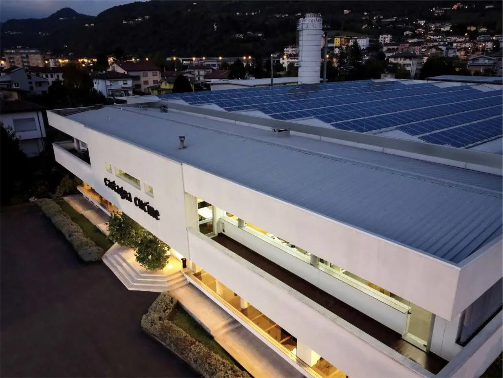
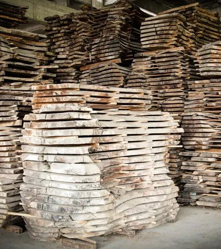

О бренде
Фабрика Castagna Cucine
Итальянская фабрика кухонь в Вальданьо. Франческо Кастанья основал её в 1958 году.

Производство в Италии
С первых лет фабрика специализировалась на работе с деревом. Коллекции Castagna Cucine проектируют и изготавливают в Италии.
Кухни по размерам проекта
Элементы разных коллекций можно сочетать. Для продолжения отделки в смежных помещениях фабрика изготавливает мебель для гостиной и панели буазери по размерам.
Фото и описание по материалам Castagna Cucine.

Обсудить проект кухни
Подберём конфигурацию и отделки для Вашего проекта.